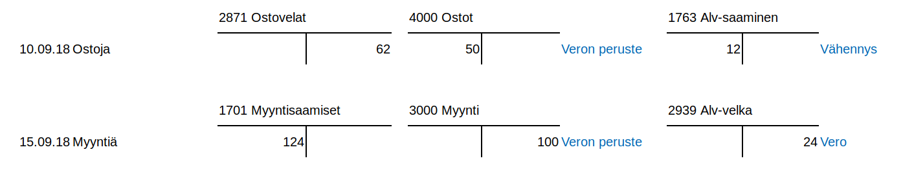

Arvonlisävero¶
Koodit kohdalleen
Arvonlisäveron käsittely perustuu kirjauksiin liittyviin ohjaustietoihin (eli alv-laji, alv-prosentti ja kirjauksen tyyppikoodi). Väärät alv-koodit johtavat virheelliseen alv-ilmoitukseen. Jotta ohjaustiedot tulevat oikein, on verolliset kirjaukset suositeltavaa tehdä aina Kirjausapurilla mallikirjausten mukaisesti!
Jos olet tullut kirjanneeksi euromäärän tai alv-prosentin väärin, on yleensä helpointa poistaa tositteelta kaikki kirjaukseen liittyvät rivit ja tehdä Kirjausapurilla koko kirjaus uudestaan.
Kitupiikin tapa käyttää ohjaustietoja vaatii usein vähän totuttelua, sillä monilla muilla ohjelmilla kirjaukset tehdään yksinomaan eri tilejä käyttäen. Kitupiikin menettelystä on kuitenkin omat etunsa
- Kitupiikki pystyy laatimaan arvonlisäveroilmoituksen ja useimmissa tapauksissa laskemaan myös mahdollisen alarajahuojennuksen
- Jos alv-prosentit muuttuvat, ei tilikarttaan tarvitse luoda uusia tilejä, ja myös muutosvaihessa kirjauksien tekeminen onnistuu
- Alv-kirjauksia ei ole mitenkään piilotettu käyttäjältä, joten monimutkaisemmissakin tapauksissa (esim. vähennyskelvottomat yhteisöhankinnat) kirjauksen oikeellisuus on havaittavissa.
Arvolisäverovelvollisuus¶
Kirjanpitovelvollinen määritellään arvonlisäverovelvolliseksi Perusvalinnoista. Jos yritys ei ole alv-velvollinen, ei arvonlisäveroon liittyviä valintoja näytetä kirjauksissa eikä määrityksissä.
Arvonlisäverovelvollisuus
Arvonlisäverovelvolliseksi on hakeuduttava, jos tilikauden liikevaihto voi ylittää 10 000 euroa. Alarajahuojennuksen takia hakeutuminen kannattaa yleensä pienemmälläkin liikevaihdolla. Yleishyödyllinen toiminta on arvonlisäverotonta, eli useimpien yhdistysten tarvitsee maksaa arvonlisäveroa vain, jos ne harjoittavat huomattavaa liiketoimintaa. Katso Verohallinnon ohje arvonlisäverotuksesta.
ALV-välilehti¶

Verokausi on pääasiallisesti kuukausi. Verohallinnon ohje selvittää, milloin ja miten yritys voi hakeutus neljännesvuoden tai vuoden verokauteen.
Viimeisin ilmoitus-kohtaan merkitään se päivämäärä, johon asti arvonlisäveroilmoitukset on annettu.
Tällä sivulla voit myös tehdä uuden alv-tilityksen (Tee alv-tilitys) tai tarkastella jo tehtyjä tilityksiä (Näytä tilitys ja Näytä erittely). Voit poistaa tilityksen, jos sitä ei ole vielä annettu verottajalle.
Arvonlisäverolajit¶
Kitupiikki käsittelee arvonlisäveroa ohjaustietojen avulla, eli samalle kirjanpitotilille voi kirjata erilaisen alv-kohtelun kirjauksia.
Kitupiikissä on seuraavat alv-kirjaustyypit
| Tunnus | Nimi | Selitys |
|---|---|---|
| Veroton | Myynnistä ei makseta veroa / menosta ei tehdä alv-vähennystä. Tämä merkitään myös kaikille niille menotileille, jotka eivät ole alv-vähennyskelpoisia. | |
 |
Verollinen myynti/osto (netto) | Verollinen kotimaan myynti/osto. Heti kirjauksen yhteydessä myynti- tai ostotilille kirjataan veroton määrä, ja alv-veron tai vähennyksen osuus kirjataan alv-velkojen tai -saatavien tilille. |
 |
Verollinen myynti/osto (brutto) | Verollinen bruttosumma kirjataan tilille, ja vero erotetaan tililtä alv-velkatilille vasta arvonlisäveroilmoitusta laadittaessa. |
 |
Verollinen myynti/osto (maksuperusteinen alv) | Arvonlisävero tilitetään vasta, kun maksu on suoritettu. |
 |
Nollaverokannan alainen myynti | Erikseen määritellyt tilanteet joissa myynnistä ei suorita veroa, mutta hankinnoista saa vähentää arvonlisäveron. |
 |
Tavaroiden ja palveluiden yhteisömyynti tai -osto | Verohallinnon ohje. Kirjauksen voi tehdä Kirjausapurilla. |
 |
Tavaroiden maahantuonti EU:n ulkopuolelta | Maahantuonnin arvonlisävero ilmoitetaan kausiveroilmoituksessa. Myyntilaskun yhteydessä kirjaus tehdään valinnalla Tavaroiden maahantuonti EU:n ulkopuolelta. Jos myyntilasku on jo kirjattu verottomana, voidaan tullauspäätös kirjata myöhemmin valinnalla Tavaroiden maahantuonti, veron kirjaus. |
 |
Rakennuspalveluiden myynti tai osto | Rakennuspalveluiden arvonlisäveron suorittaa ostaja käänteisen verovelvollisuuden mukaisesti. Kirjauksen voi tehdä Kirjausapurilla ja Kitupiikillä voi myös laatia laskun (mainittava ostajan Y-tunnus tai VAT-tunnus). |
 |
Voittomarginaalijärjestelmä | Marginaaliverotusmenettelyssä vero maksetaan ainoastaan voittomarginaalista. Kitupiikki tukee Verohallinnon ohjeessa kuvattua yksinkertaistettua menettelyä. 1.3Kitupiikin versiosta 1.3 lähtien |
Arvonlisävero kirjanpidossa¶
Alla esimerkki kotimaan arvonlisäveron käsittelystä nettoperiaatetta noudattaen. Kitupiikissä kaikkiin arvonlisäverollisiin kirjauksiin liittyy alv-koodi, jonka tyyppitieto on esitetty alla olevassa esimerkissä sinisellä:

10.9. on tehty osto, josta saadaan tehdä alv-vähennys. Veroton osuus kirjataan ostotilille ja veron osuus alv-saamiseksi.
15.9. on saatu verollista myyntituloa. Veroton osuus kirjataan myyntitilille ja veron osuus alv-velaksi.

30.9. näkyy kirjanpidossa verokauden viimeiselle päivälle kirjattava alv-ilmoitus. Siinä alv-velat ja saamiset yhdistetään Verovelka-tilille.
Noin puolentoista kuukauden kuluttua, alv-ilmoituksen antamisen yhteydessä, verot sitten maksetaan verottajan pankkitilille.